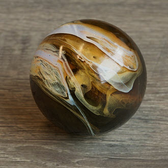
本教程介绍如何通过结合使用以下两种着色对大理石进行逼真的着色：用于玻璃的 standard_surface 着色，以及用于大理石内部的 standard_volume 体积着色。当将这两个着色器与同一纹理投影一起使用时，我们可以实现将两者结合并为大理石着色创建逼真深度的效果。当然，体积部分纯粹是可选的，很可能玻璃着色本身就会产生足够的效果。
请注意，本教程仅作为指南，因此不应严格遵循这些值，因为它们大多是基于特定纹理和外观的“艺术”选择。因此，我们建议您根据要实现的外观和所使用的纹理贴图，尝试使用不同的值。
例如，推荐的纹理图像是一个将油和墨水混合在一起的纹理图像。这将产生适合大理石着色器的色彩纷呈的有趣效果。
| 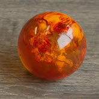 | 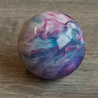 | 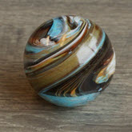 | 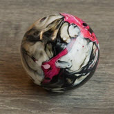 | 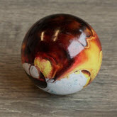 | 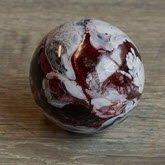 | 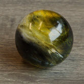 | 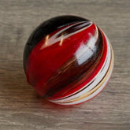 | 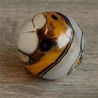 | 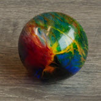 |
要下载场景文件，请单击此处。油和墨水纹理贴图由 Kenny Frankland 友情提供。
base_weight：0
specular_roughness：0
specular_ior：1.52
transmission_weight：1
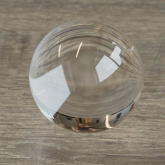
在 standard_surface 着色器的属性编辑器的“预设”(Presets)菜单中提供了玻璃预设。
现在，我们需要将大理石纹理连接到 transmission_color 和 transmission_scatter。transmission_scatter 适用于任何相当稠密的材质，或者足够稠密使得散射可见的材质，例如蜂蜜。带有 depth 的 Transmission_scatter 对于大理石着色的外观至关重要。
| 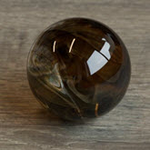 | 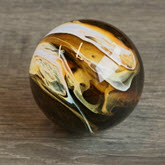 | 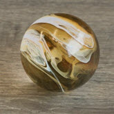 |
| transmission_depth：0（默认值） | transmission_depth：1 | transmission_depth：3 |
| 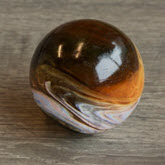 | 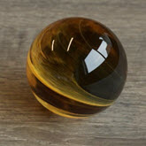 | 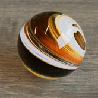 |
| u_angle：30。v_angle：230。scale_x：0.3 | u_angle：330。v_angle：90。 | u_angle：270。v_angle：30 |
您还可以尝试将纹理贴图连接到 base_color*。尝试增加 *base_weight 并减少 transmission_weight。
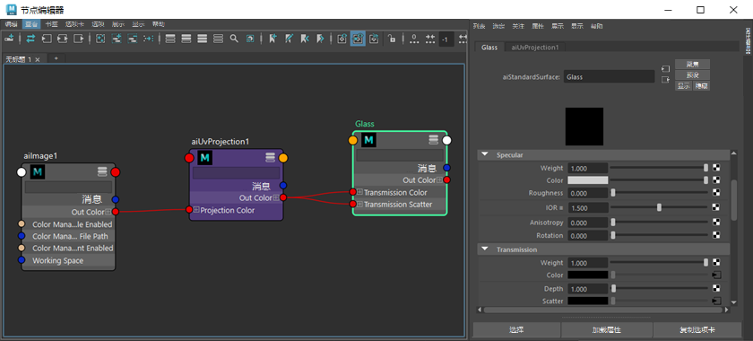
玻璃大理石的最终着色网络
现在，它看起来非常不错。但是，让我们尝试通过在玻璃球体内部使用体积向大理石添加内部来进一步改进它。
首先，复制玻璃球体，在 X、Y 和 Z 方向上将其稍微缩放到 0.9 左右。
选择球体，然后转到属性编辑器中的 Arnold 体积属性。
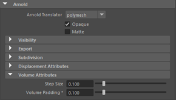
步长越小（因而越精确），渲染时间越长；步长越大，渲染速度越快。
现在，我们希望使用用于玻璃着色器的相同图像（和投影）来为体积添加颜色。
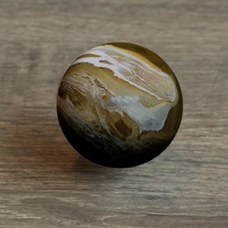
image -> uv_projection -> volume.scatter_color
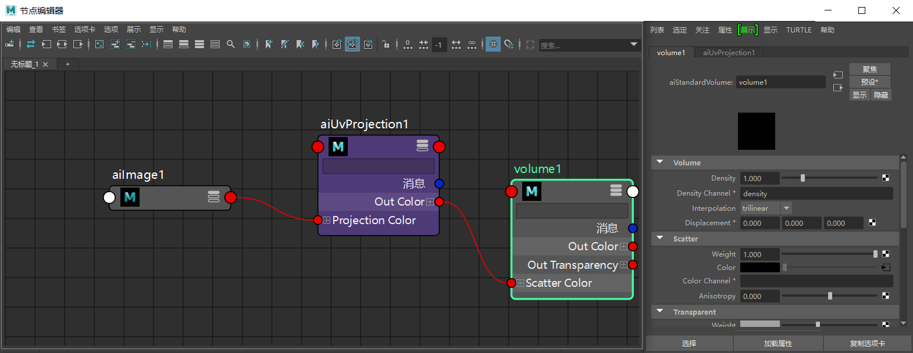
体积的最终着色网络
请确保 skydome_light 具有足够的 volume_samples，否则体积会出现噪波。
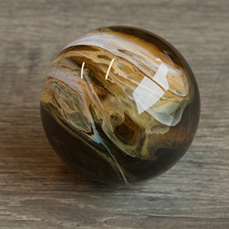
内部有体积的大理石玻璃着色